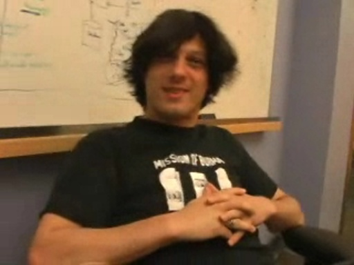

Channel 9 Blog for Jeff Sandquist
Happy Holidays Niners[MP4] [WMV] [0:05:06] [2007/12/23]
In keeping with what has become a holiday tradition here on Channel 9 he have
Chris Anderson, Don Box and
now Amanda Silver singing you a special holiday song.
You can compile along with…
Jeff Sandquist: Skateboarding, Channel 9 and Life at Microsoft[MP4] [WMV] [0:28:22] [2007/10/05]Rory, in one of his final interviews for Channel 9 turned around the camera and interviewed me (Jeff ) for Channel 9.
Here's the description Rory wrote for this piece:
Jeff Sandquist was…
Shawn Burke : Discussing the Release of .NET Source Code[MP4] [WMV] [0:10:45] [2007/10/04]Matt Winkler and David Tesar catch up with
Shawn Burke to talk about
the announcement today that the source for the .NET Framework will be made available.
In this video we find out about how…
Pablo Castro: Astoria Data Services[MP4] [WMV] [0:31:46] [2007/05/08]Meet Pablo Castro one of the folks behind
Astoria. Astoria exposes "data services" that enable applications to access and manipulate data over regular HTTP connections, using URIs to…
[Bill-Gates-and-Tim-OReilly-A-conversation-at-MIX]
Learn how 10 was made[MP4] [0:41:06] [2006/03/14]Channel 9 now has a sister This weekend we launched an all new community called 10 at http://on10.net 10 was built from the ground up using ASP.NET 2.0, SQL Server 2005 with a simple, easy to use…
MSN Virtual Earth Team - Virtual Earth Ships[MP4] [WMV] [0:34:08] [2005/07/25]A couple of months ago
we interviewed the Virtual Earth team and got an early look at what they were planning. They have now gone live so we went back and interviewed the team again. They jumped…
Codin' My Way to the PDC Contest[MP4] [WMV] [0:08:12] [2005/06/08]Here Michael talks about the
Codin' My Way to the PDC contest and the
Shareware Starter Kit.
Shareware Starter Kit Demo[MP4] [WMV] [0:04:25] [2005/06/08]
So just what is the Shareware Starter Kit? In this video Michael Lehman (the new
Channel 9 Podcaster) demonstrates the beta of the Shareware Starter Kit for Visual Studio 2005.
Submit an…
Blog your way to the PDC[MP4] [WMV] [0:04:14] [2005/06/08]Who says it doesn't pay to blog? :-> In the
Blog your way to the PDC contest you could win tickets, accomodations and a $1000.00 (US) airfare voucher for PDC05.
Scoble talks more about the…
The PDC05 Flair[MP4] [WMV] [0:03:35] [2005/06/08]You want me to what on my weblog? :->
We've created some flair that we hope you'll put on your weblog to help promote the PDC. If you add them to your blog we'll add you to our
Flair Sightings…